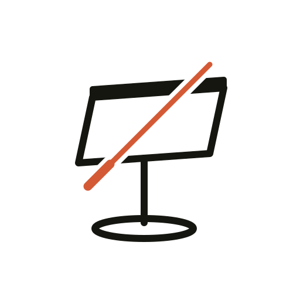
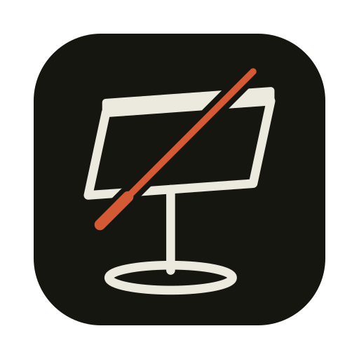
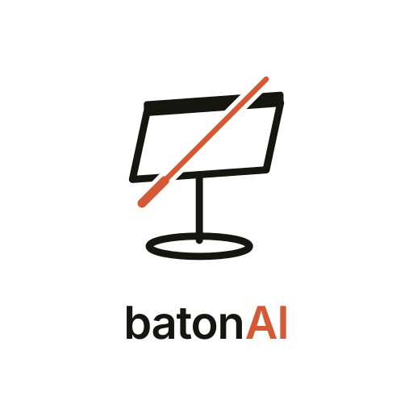
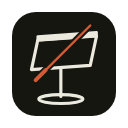
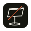

Variantes





Legibilidad en pequeño


Tinta, chasis y señal de la app. La batuta lleva el naranja; el atril, la tinta.
Tablero en perspectiva con canto, pie central y base elíptica. La batuta cruza por delante con un hueco de separación.
SVG editable + PNG. El hueco de la batuta es transparente (máscara), así que funciona sobre cualquier fondo.